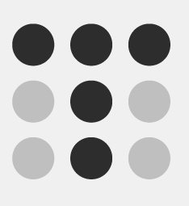
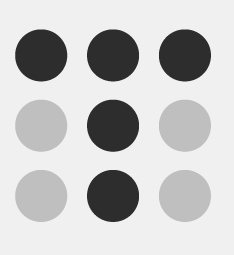
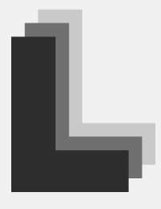
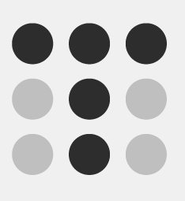
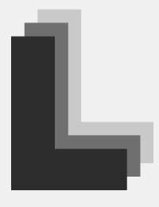
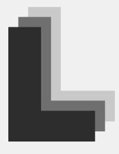
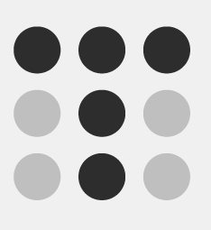
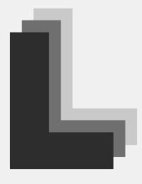

.png) 

.png) 





Cuando percibimos una figura que no está cerrada o delimitada por líneas, nuestra mente tiende a transmitir una sensación de cierre o forma completa.
Según la Teoría de la Gestalt, las formas cerradas se perciben como formas más estables. Tendemos a cerrar o completar las formas abiertas, buscando otorgarles más estabilidad. Por eso, tendemos a agrupar esas formas individuales, como parte de un grupo, buscando componer una forma cerrada y completa.
El principio de proximidad teoriza cómo tendemos a agrupar las formas o elementos visuales que están próximos entre sí. Para ello, dichos objetos deben compartir alguna de estas características en común: forma, color, tamaño o textura.
Por otro lado, si aumentamos el espacio entre los elementos podemos conseguir una sensación de separación, aún cuando los elementos tengan características en común, haciendo que parezcan grupos separados a pesar de la semejanza
El ojo puede crear visualmente la continuidad de una línea. Este principio se basa en la idea de que el ojo humano va a seguir siempre el camino visual más suave, menos forzado y más coherente incluso aunque las líneas cambien de color a mitad de su recorrido. En este caso, tendemos a agrupar los elementos por la continuidad que percibe nuestro ojo.
El principio de Continuidad puede resultarnos de mucha utilidad, para por ejemplo, apuntar hacia un elemento del diseño o cuando necesitamos guiar la mirada de nuestro espectador.
El principio de semejanza se utiliza para unir elementos que estén o no próximos entre sí. Si los encontramos similares, tenderemos a verlos como parte de un grupo. Además, si un diseño está formada por objetos similares, el espectador va a percibir el conjunto como algo equilibrado y coherente. Cuanto mayor es la similitud entre los objetos, más coherencia transmitirá la obra en su conjunto.
La similitud entre los diferentes elementos puede ser de forma, color, tamaño o textura. Gracias al principio de semejanza, podemos generar énfasis sobre un elemento, rompiendo el patrón de similitud dentro del grupo. A estos casos donde un objeto destaca del resto y no concuerda con la similitud, se denomina Anomalía.
El principio de Figura y Fondo es bastante similar al principio de cierre, porque aprovecha también la forma en que el cerebro procesa el espacio negativo. Este principio describe la tendencia que tiene el ojo humano a ver un objeto separado de lo que le rodea. Nuestra mente no es capaz de interpretar un mismo elemento como figura o como fondo al mismo tiempo.
En los últimos años se habla también de este principio de dirección común. Esta última ley, teoriza que los objetos y elementos que parece que construyen un patrón o flujo en la misma dirección, son una vez mas percibidos como parte de un grupo.
Este principio, también conocido como prägnanz (que significa buena figura), teoriza que los elementos que cuentan con simetría y orden, son también percibidos como parte del mismo grupo.